EP2 分鏡清單（加長版）
2026-11-18 · 共 131 格（episodes/002_chicxulub/script_v3.md）· 右欄是影片 ep2_v2.mp4 現在放的圖；紅底＝沒有自己的圖（9 格）或後半段的圖還沒放進去。「新畫」是這次加長版畫的格號，「v1」是第 1 版的格號。
| 格 | 畫面 | 旁白 | 影片現在放的圖 |
|---|---|---|---|
| S00-1 | 冒火的森林裡，HERO 拚命往前跑，前面是亂跑的石頭（甲龍） 🖼 背後跟拍、遠景 | 此時此刻，你正在跑。 | 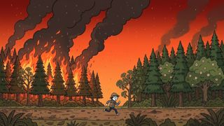 |
| S00-2 | 石頭的尾錘上勾著 HERO 的背包，一甩一甩 🔍 特寫 | 而你前面那隻甲龍，正帶著你的背包。 | 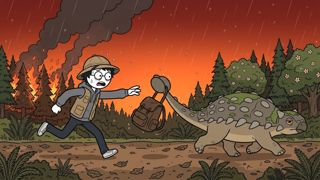 |
| S00-3 | 天空熱得發紅，小玻璃珠一顆顆落下，樹林一處處燒起來，旁邊還有其他恐龍在逃 🖼 高角度、大遠景 | 至於天上掉下來的，是一顆顆小玻璃珠。 | 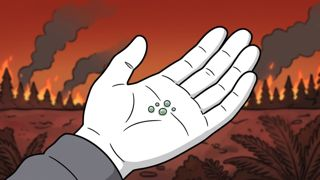 |
| S00-4 | HERO 跳過一根冒火的倒木，畫面定格、變灰 🖼 迎面、近景、定格 | 這時候你一定很想問： 我只是回來拿個背包， 怎麼會變成這樣？ | 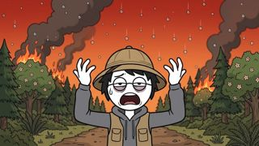 |
| S00-5 | 畫面快速倒帶，轉成黑畫面 🖼 倒帶效果 | （沒有旁白） | 剪輯效果（倒帶轉黑） |
| S01-1 | HERO 的書桌：一疊帳單，最上面是 EP1 博士給的收據（畫著壞掉的相機，沒有字） 🔍 俯拍特寫 | 先把時間倒回去一點。你的書桌上，帳單又多了幾張。 帳單旁邊，還有一張博士給的收據，上面畫著一台壞掉的相機。 | 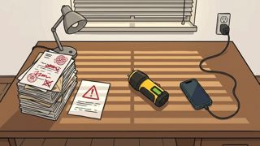 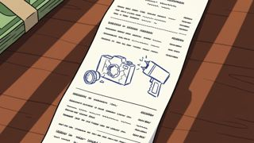 |
| S01-2 | 學校餐廳結帳台前，HERO 拿著餐盤，另一手翻遍口袋 🖼 中景 | 到了中午，你到學校餐廳排隊。 結果輪到你的時候，才發現學生證不見了。 | 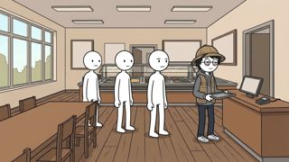 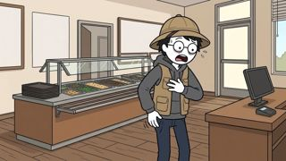 |
| S01-3 | EP1 最後的畫面：空地上，背包躺在睡著的石頭旁邊 ⏪ 遠景（沿用 EP1 12-15） | （停）這時你才想起來，它在你的背包裡。 而你的背包，還躺在三天前的白堊紀。 | 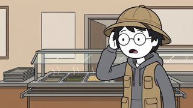 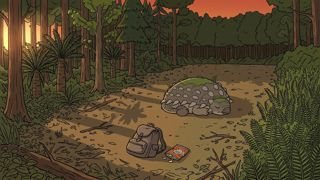 |
| S01-4 | 刷卡機亮紅燈（只有紅燈和叉叉圖示），HERO 把餐盤放回去 🖼 近景 | 就這樣，沒了學生證，你連學校餐廳的飯都吃不到。 | 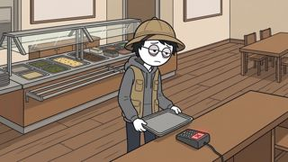 |
| S01-5 | 校園裡，校務大樓旁那間老舊的兩層木造小屋；HERO 走向門口 🖼 遠景 | 所以你只好去找博士，想借時光機。 | 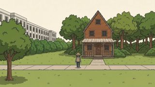 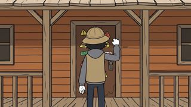 |
| S01-6 | 實驗室裡，博士一聽，眼睛發亮 🖼 近景 | 博士一聽，眼睛都亮了，說：可以啊，不過你要順便幫我拍一張照片。 | 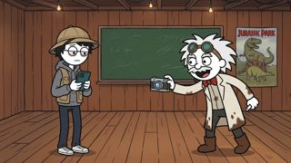 |
| S01-7 | 博士一手把相機塞給 HERO，一手搖手指 🖼 中景 | （停）不拍，就不借。 | 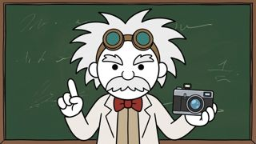 |
| S02-1 | 博士在黑板上用粉筆畫一顆拖著尾巴的星；HERO 在旁邊滑手機 🖼 中景 | 博士要你拍的，是天上那一顆所謂的「新星」。 | 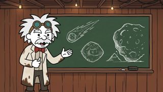 |
| S02-2 | 黑板：那顆星被畫成一顆坑坑疤疤的大石頭，旁邊一座聖母峰，小行星比山還高 🔍 特寫 | 其實呢，它是一顆小行星，叫做 Chicxulub，念作「希克蘇魯伯」。 它大概有十公里寬，比聖母峰還要高。 | 沒有自己的圖（影片暫時重複放上一格） |
| S02-3 | 黑板：北美洲和墨西哥的輪廓，小行星從右上角斜斜地飛向猶加敦半島 🔍 特寫 | 而它會斜斜地，從東北邊衝下來，撞在今天墨西哥的猶加敦半島。 | 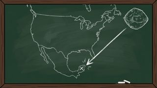 |
| S02-4 | HERO 頭都沒抬，繼續滑手機 🖼 近景 | 而你，只聽到兩個字：流星。 （停）拍流星，這有什麼難的。 | 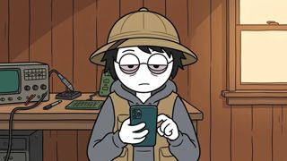 |
| S02-5 | 博士把生存指南推到 HERO 面前，HERO 隨手塞進一個新袋子 🖼 中景 | 說完，博士又把那本生存指南推了過來。這一次，你倒是有把它塞進袋子裡。 | 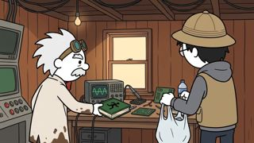 |
| S02-6 | HERO 把洋芋片、食物和水裝進那個袋子 🔍 俯拍特寫 | 你還帶了洋芋片、食物和水。不過這些不是給你自己的，是要帶給一位老朋友。 | 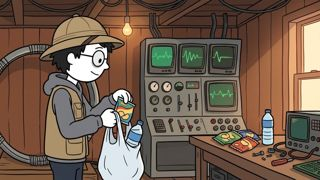 |
| S02-7 | 袋子裡只有洋芋片；旁邊浮出指南的一頁：一件外套和一大疊罐頭的圖示 🔍 俯拍特寫 | （停）書上說，想在這次撞擊後活下來，你得帶保暖的衣服，和至少六年份的糧食。 而你，帶了一袋洋芋片。 | 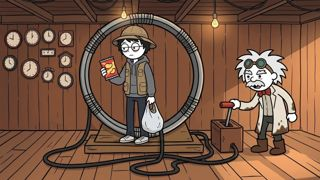 |
| S02-8 | 博士拉下拉桿，時光機亮起來，HERO 被吸進隧道 🖼 遠景 | （沒有旁白） | 還沒畫 |
| S03-1 | EP1 那片空地：石頭還在原地睡覺，背包就在牠旁邊 🖼 遠景 | 時間，回到三天後的白堊紀，還是同一片空地。 這是白堊紀的最後幾天，也是最有名的那些大恐龍，活著的最後幾天。 | 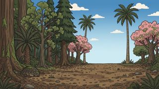 |
| S03-2 | 空地邊：高高的棕櫚樹，和幾棵開著粉紅花的樹，陽光很暖 🖼 大遠景、仰角 | 這時候的地球很暖，暖到連北極都長棕櫚樹。 而且這裡，很可能剛好是春天。 | 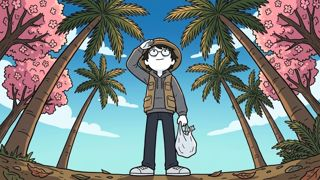 |
| S03-3 | 石頭趴著打呼，HERO 蹲在旁邊看牠 🖼 中景 | （停）三天沒見，石頭還是一顆石頭。 | 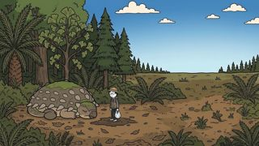 |
| S03-4 | HERO 把洋芋片倒給石頭，石頭吃得很開心 🖼 中景 | 你把洋芋片倒給牠，牠吃得很開心。畢竟這是牠這輩子吃到的第二包洋芋片。 | 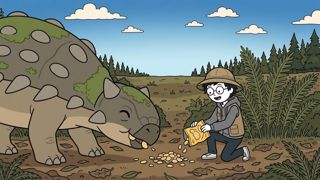 |
| S03-5 | 石頭邊吃邊甩尾巴，尾錘呼呼地掃過地面 🖼 中景、低角度 | 牠一開心，尾巴就甩來甩去。 甲龍尾巴上那顆大錘子，就像拆房子用的大鐵球，打架的時候，能把對手砸爛。 | 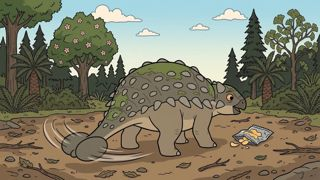 |
| S03-6 | HERO 默默往旁邊退了兩步 🖼 近景 | （停）你往旁邊退了兩步。 | 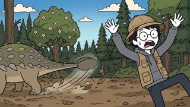 |
| S03-7 | HERO 把新袋子塞進背包，把背包放回石頭身邊，只背著相機走開 🖼 中景 | 接著你把背包放在牠旁邊，只帶著相機出發。 反正，拍完就回來拿嘛。 | 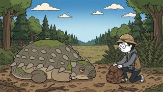 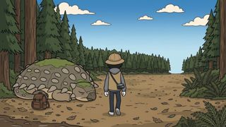 |
| S04-1 | HERO 爬上附近一塊比較高的土丘，架好相機 🖼 遠景 | 你爬上附近一塊比較高的地方，架好相機。 | 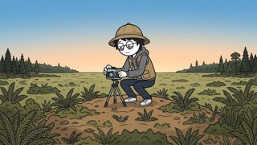 |
| S04-2 | 從高處看出去的全景；遠方有一個大山洞 🖼 過肩、大遠景 | 從這裡看出去，整片白堊紀都在眼前。 | 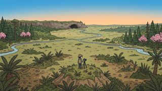 |
| S04-3 | 遠方一群阿拉莫龍，長脖子伸到樹頂吃葉子 🖼 大遠景 | 遠遠的，有一群阿拉莫龍，正把脖子伸到樹頂上吃葉子。 那些葉子，離地面差不多有四層樓高。 | 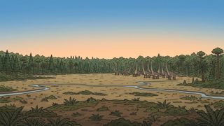 |
| S04-4 | HERO 從相機觀景窗看，往後退一步、再退一步 🖼 中景 | 你想拍一張。往後退一步，再退一步。 | 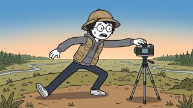 |
| S04-5 | 相機螢幕：只拍到阿拉莫龍的一條腿和半截肚子 🔍 特寫（相機螢幕） | （停）還是拍不進一整隻。 | 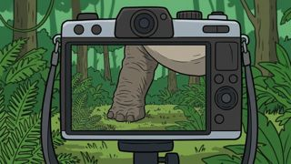 |
| S04-6 | 另一邊，一隻矮暴龍繞著一隻三角龍跳，三角龍低頭用角頂 🖼 大遠景 | 另一邊，一隻恐龍正在跟三角龍打架。 | 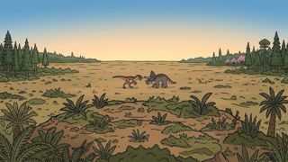 |
| S04-7 | 矮暴龍近一點：像縮小版的暴龍，腿又細又長 🖼 長焦、中景 | 牠長得像暴龍，卻小了好幾號，腿又細又長。 但牠不是小暴龍，牠叫矮暴龍，是另外一種恐龍。牠只有暴龍的十分之一重，跑得比暴龍快多了。 | 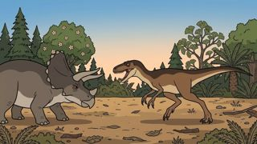 |
| S04-8 | HERO 舉起相機對準牠們，又放下，抬頭看天 🖼 近景 | 你又舉起相機。 （停）不對，博士要的是天上那一顆。 | 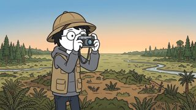 |
| S05-1 | 下午偏晚，HERO 坐在腳架旁發呆；藍天上掛著一個淡白色的半圓月亮 🖼 遠景 | 等著等著，太陽偏西了，天上掛著一個淡淡的、白天的月亮。 你閒著沒事，用相機把月亮放大來看。 | 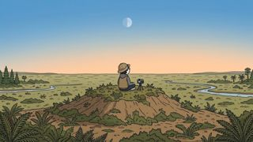 |
| S05-2 | 相機螢幕上的月亮特寫：一個一個圓坑，有的坑中間有一座小山 🔍 特寫（相機螢幕） | 月亮上，全是一個一個圓圓的坑，有的坑中間，還有一座小山。 |  |
| S05-3 | 手繪插圖：伽利略拿著望遠鏡看月亮 ✏️ 插圖 | 四百多年前，伽利略用望遠鏡，也看到了這些坑。 | 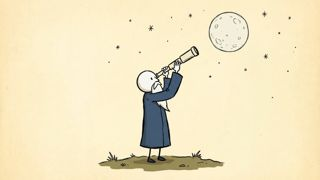 |
| S05-4 | 手繪插圖：月亮上的坑冒著煙，像一座座火山 ✏️ 插圖 | 接下來的三百年，大部分的科學家都說：這些坑，是月亮上的火山口。 | 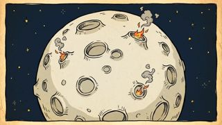 |
| S05-5 | 手繪插圖：一位留鬍子的天文學家看著望遠鏡，月坑裡有幾頭牛在吃草 ✏️ 插圖 | 也有一位德國天文學家說，他在坑裡面，看到牛在吃月亮上的草。 （停）這一點，大家倒是都不信。 | 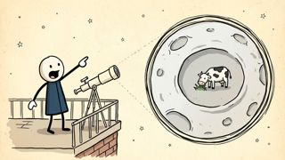 |
| S05-6 | 手繪插圖：一個人坐在牢房裡，身邊堆滿書 ✏️ 插圖 | 後來，有一個俄國人，叫莫洛佐夫。他坐了二十五年的牢，在牢裡自學了十一種語言。 出獄以後，他開始研究天文。 | |
| S05-7 | 手繪插圖：地上幾個炸彈坑，箭頭從不同方向飛來，坑都是圓的 ✏️ 插圖 | 他跑去看炸彈炸出來的坑，發現不管炸彈從哪個方向飛來，炸出來的坑，都是圓的。 所以月亮上那些圓圓的坑，很可能是天上的石頭撞出來的。 | 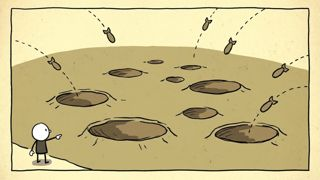 |
| S05-8 | 手繪插圖：一位戴眼鏡的老教授在書桌前寫字，窗外一顆大石頭往地球掉 ✏️ 插圖 | 差不多同一個時候，哈佛大學的一位院長也寫過：只要一顆十六公里大的石頭掉下來，就能毀掉地球上的生命。 | 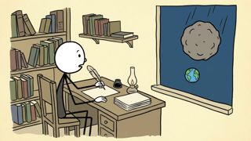 |
| S05-9 | 手繪插圖：一群天文學家搖頭擺手 ✏️ 插圖 | 可是當時，大部分的天文學家都覺得，地球不可能被那麼大的石頭撞到。 一直要到第一次世界大戰前後，大家才慢慢相信，這件事真的會發生。 | 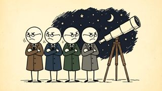 |
| S05-10 | HERO 從相機後面抬頭，天上有一顆比所有星星都亮的光點 🖼 近景、仰角 | （停）你從相機裡抬起頭。 天上那顆星，又更亮了。 | 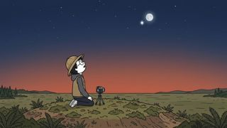 |
| S06-1 | 天上一個比其他星星亮很多的光點 🖼 中景 | 三天前，這顆星跟其他星星沒什麼兩樣。你在逃命的時候，根本沒注意到它。 | 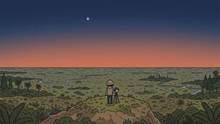 |
| S06-2 | 天空：那顆星越來越亮，亮過旁邊的月亮 🖼 大遠景 | 可是現在，它越來越亮。比所有的星星亮，比行星亮，比月亮還亮。 | 沒有自己的圖（影片暫時重複放上一格） |
| S06-3 | HERO 從相機後面抬起頭，皺眉 🖼 近景 | 你開始覺得怪怪的：這顆流星，怎麼這麼亮？ | 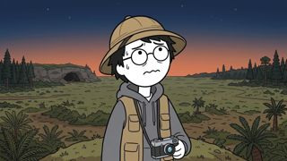 |
| S06-4 | 天空被照得像白天，那顆星比太陽還亮 🖼 背後、遠景 | 最後，它比太陽還亮。 | 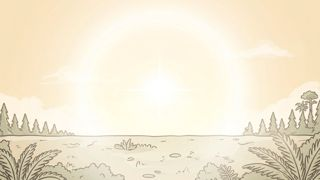 |
| S06-5 | 手繪插圖：小石子流星在高空燒掉；旁邊一顆大石頭把空氣像水一樣劈開 ✏️ 插圖 | 一般的流星，只有小石子那麼大，在天空很高的地方，就被空氣擋下來，燒掉了。 可是這一顆，一秒鐘飛二十公里。對它來說，空氣就像水一樣，根本擋不住。 | 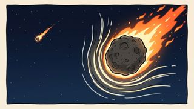 |
| S06-6 | 它拖著火尾，幾秒鐘劃過整片天空；HERO 按下快門 🖼 背後、遠景 | 然後，它用幾秒鐘的時間，劃過了整片天空。 你按下了快門。 | 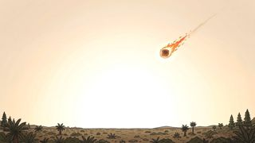 |
| S06-7 | 它消失在南方的地平線，接著天邊一陣亮光 🖼 背後、大遠景 | 欸。 | |
| S06-8 | HERO 張著嘴，呆住 🖼 近景 | （停）它沒有飛過去。 它撞上了。 | |
| S07-1 | 手繪插圖：火球貼著海面衝下來，底下的淺海冒出大片蒸氣 ✏️ 插圖 | 在你看不到的地平線那一邊，發生了這些事。 小行星還沒碰到地面，它前面的空氣就被壓得燙到幾千度，把底下那片淺海，烤乾了一大半。 | |
| S07-2 | 手繪插圖：小行星撞進地面，岩石像液體一樣往外流開 ✏️ 插圖 | 接著，它用一秒鐘十六公里的速度，撞進了岩石。 撞得太用力了，石頭不是碎掉，而是像水一樣，流開來。 | |
| S07-3 | 小插圖：一顆砲彈掉進游泳池，水往四面濺起 ✏️ 插圖 | 就像把一顆砲彈，丟進游泳池。 | |
| S07-4 | 手繪插圖：撞擊點濺起一圈高高的土牆，旁邊畫一架小飛機，土牆比飛機高 ✏️ 插圖 | 先是往四面八方，濺起一圈土牆，比飛機飛得還要高。 | |
| S07-5 | 手繪插圖：中間彈起一根巨大的柱子，旁邊畫一座聖母峰，柱子更高 ✏️ 插圖 | 接著，中間又彈起一根柱子，比聖母峰還高。 游泳池裡，這只要幾秒鐘；在這裡，要整整十分鐘。 | |
| S07-6 | 手繪插圖：柱子垮下來，剩下一圈環狀的山 ✏️ 插圖 | 幾分鐘後，柱子垮了下來，只剩下一圈環狀的山。 | |
| S07-7 | 閃回：S05-2 相機螢幕上的月亮坑，坑中間的小山 ⏪ 特寫（沿用 S05-2） | （停）就是你剛剛在月亮的坑中間，看到的那座小山。 | |
| S07-8 | 小插圖：一隻手用槌子敲釘子，槌子頭冒出熱氣 ✏️ 插圖 | 而且，那裡燙得不得了。 你用槌子敲釘子，敲完摸一下槌子，會是熱的。 | |
| S07-9 | 手繪插圖：撞擊點冒出一團比太陽還亮的大火球，往外衝 ✏️ 插圖 | 這一撞，等於把一座山那麼重的石頭的速度，一瞬間，全部變成熱。 那裡變得比太陽表面還要燙，連空氣都燒成一團大火球，往外衝。 | |
| S07-10 | 手繪插圖：一圈衝擊波往四面八方推出去，地面的樹全被推倒 ✏️ 插圖 | 一道衝擊波，用一小時一千六百公里的速度，往四面八方推出去。 科學家說，地球上勉強能拿來比的，只有氫彈。可是這一撞，比一顆氫彈還要大上好幾千萬倍。 | |
| S07-11 | 手繪插圖：幾塊石頭飛出地球，飛向一顆紅色的火星，更遠處一顆木星和它的小月亮 ✏️ 插圖 | 有些石頭，甚至被炸得飛出了地球。 科學家算過，可能有幾千塊，最後掉到了火星上；還有一兩塊，飛得更遠，撞上了木星的月亮。 | |
| S08-1 | HERO 從土丘衝下來，跑回空地，從背包裡翻出生存指南 🖼 中景 | 這是你這輩子，第一次那麼想看生存指南。 於是你跑回去，從背包裡把它翻出來。 | |
| S08-2 | 指南翻開的那一頁：一顆拖著火尾的大石頭撞地球，旁邊一隻恐龍的骨頭 🔍 特寫 | 翻開一看，你才知道，這一顆，就是讓恐龍滅絕的那一顆。 | |
| S08-3 | 指南的爆炸範圍圖：撞擊點往外一圈一圈，圈圈依序蓋到德州、紐約、阿根廷（書上 p.13，手繪重畫，沒有字；v2 S02-6、S02-7 改成指南內頁） 🔍 特寫 | 指南上畫著一張圖：如果今天撞在同一個地方，德州的人會被炸死，紐約的人會被震聾，連阿根廷的窗戶，都會被震碎。 | |
| S08-4 | 指南：一個地球，撞擊點在這一邊，另一邊站著一個小人比讚 🔍 特寫 | 想活下來，最好的位置，是在地球的另一邊。 | |
| S08-5 | 指南內頁：世界地圖。撞擊點骷髏、北美洲火焰、大部分地方雪花、很遠的熱帶島嶼一個太陽和箭頭（沒有字） 🔍 特寫 | 而你在的地方，正畫著一團火。 | 沒有自己的圖（影片暫時重複放上一格） |
| S08-6 | 指南下一頁：一排圖示，第一個是裂開的地面 🔍 特寫 | 指南上寫著，接下來會發生的事。 第一，地震。 | |
| S08-7 | 圖示：天上落下小玻璃珠 🔍 特寫 | 第二，天上會掉下小玻璃珠。 | |
| S08-8 | 圖示：發熱的天空把森林烤成一台烤箱 🔍 特寫 | 第三，它們會把天空烤得像一台開到最強火的烤箱，森林會燒起來。 | 沒有自己的圖（影片暫時重複放上一格） |
| S08-9 | 圖示：聲波 🔍 特寫 | 第四，一聲很大的音爆，不管你在地球的哪裡，都聽得到。 | |
| S08-10 | 圖示：水邊打來大浪；旁邊一個躺在海邊乘涼的小人被浪追著跑 🔍 特寫 | 第五，不要待在水邊，會有大浪。 本來，海是最好的隔熱墊，待在海邊最涼快。可是有大浪，所以很兩難。 | 沒有自己的圖（影片暫時重複放上一格） |
| S08-11 | 圖示：一座山和一個山洞，箭頭往深處指 🔍 特寫 | 想活下來，就快去高的地方，找一個山洞，越深越好。 | |
| S08-12 | 指南最後一格：一塊大陸、一座山、一個時鐘、一個打勾 🔍 特寫 | 寫這本指南的科學家說：要活下來，你得在對的大陸、對的地方、對的高度，還有對的時間。 | |
| S09-1 | HERO 闔上指南，看了看相機裡的照片，聳聳肩 🖼 近景 | 你想了一下。 （停）關我屁事，照片拍到了，可以回家了。 | |
| S09-2 | HERO 把指南塞回地上的背包，蹲下來要翻按鈕；石頭搶先把頭鑽進背包 🖼 中景 | 於是你把指南塞回背包，正要翻出那顆按鈕。 可是石頭還想吃洋芋片，牠把頭鑽進了你的背包。 | v1 08-07 石頭把頭鑽進背包（還沒放進影片） |
| S10-1 | 地面開始晃，小石頭在地上跳動 🖼 低角度、中景 | 你在地獄溪。算一算，撞擊後大約十分鐘， 地面開始搖了。 | v1 08-08 地面開始搖（還沒放進影片） |
| S10-2 | 石頭嚇得跳起來就跑，背包背帶勾在牠的尾錘上，跟著被帶走 🖼 中景 | 石頭嚇了一大跳，轉身就跑。 （停）帶著你的背包。還有，你的回家按鈕。 | |
| S10-3 | 背包勾在尾錘上甩來甩去，HERO 伸手想抓又縮回來 🖼 中景、背後跟拍 | 背包勾在那顆大錘子上，甩來甩去。你想搶回來，又不太敢靠太近。 | |
| S10-4 | HERO 在後面追，石頭在前面 🖼 背後跟拍、中景 | 你只好追上去。 | |
| S10-5 | EP1 行前教育：博士一手舉大恐龍、一手舉小恐龍 ⏪ 近景（沿用 EP1 04-06） | 博士上課說過，越大隻的，跑得越慢。 | |
| S10-6 | HERO 越落越遠，扶著膝蓋喘，石頭在遠處越跑越小 🖼 遠景 | （停）可是你連一隻甲龍都追不上。 | |
| S11-1 | 天上開始落下小玻璃珠（落地不發紅、不冒煙），高空一片發光，天空被烤得通紅 🖼 遠景 | 撞擊後大約十五分鐘， 天上，開始下起小玻璃珠。 | |
| S11-2 | 樹林一片一片燒起來，天空一片橘紅，HERO 從火堆之間穿過去 🖼 遠景 | 這些小珠子，是被撞上天的岩石，融化以後，在高空又凝固成的。 它們掉回來的時候，在很高很高的地方跟空氣摩擦，一顆一顆發光發熱。 等掉到地上，已經不燙了；可是幾億顆一起在天上發熱，就把整片天空，烤得像一台開到最強火的烤箱。 樹林，就這樣一片一片燒了起來。 不過，是不是全世界的森林都一起燒，科學家到現在還在吵。 | |
| S11-3 | 一群鴨嘴龍從 HERO 旁邊衝過去 🖼 遠景 | 所有的恐龍都在逃。 | |
| S11-4 | 一隻三角龍從火裡衝出來 🖼 中景 | （沒有旁白） | 還沒畫 |
| S11-5 | 腫頭龍低著頭逃，又一頭撞上一棵樹 🖼 中景 | （沒有旁白） | 還沒畫 |
| S11-6 | 似鴕龍從 HERO 身邊跑過，嘴裡還叼著 HERO 的帽子 🖼 斜角跟拍、中景 | 喔，那是你的帽子。 | |
| S11-7 | 一隻在地上跑的鳥（翅膀短、腿長）跟在 HERO 腳邊一起逃 🖼 低角度、中景 | 還有一隻鳥，也跟著你們一起跑。牠不會飛高，平常就住在地上。 樹都燒光了，會活下來的鳥，就是牠們這種，住在地上的鳥。 | |
| S11-8 | 路邊一隻鼩鼱一溜煙鑽進地洞 🖼 低角度、特寫 | 大傢伙拚命跑。 小傢伙呢，一鑽就沒事了。 | 小傢伙鑽進地洞（v1 09-09 有發紅玻璃珠，要重畫） |
| S11-9 | 地洞剖面：鼩鼱縮在洞裡，身上有毛，嘴裡叼著一隻蟲 🔍 剖面、特寫 | 牠吃蟲子，會鑽進洞裡躲熱，身上還有一層毛，之後再冷都不怕。 | |
| S11-10 | 鼩鼱從洞口探頭，看著 HERO 跑過去 🔍 特寫 | （停）而這個小傢伙，就是你的祖先。 | 沒有自己的圖（影片暫時重複放上一格） |
| S12-1 | 石頭亂跑，前面出現一個大山洞，就是 HERO 在高處看到的那一個；已有恐龍往裡走 🖼 遠景 | 石頭一路亂跑，竟然跑到了你在高處看到的那個大山洞。 | |
| S12-2 | 山洞口，所有恐龍和 HERO 同時停住、轉頭看南邊；遠方地平線的空氣在震，樹葉往同一邊倒 🖼 遠景 | 這時候，南邊的地平線，傳來一陣低低的轟隆聲，連空氣都在震。 是音爆。撞擊後大約兩個半小時，它才終於傳到地獄溪。 | |
| S12-3 | HERO 摀著耳朵，一臉「現在才來？」 🖼 近景 | （停）聲音在空氣裡，走得最慢。 | |
| S12-4 | HERO 追上石頭，一手抓住背包的背帶，停了一下 🖼 近景 | 你終於抓到了背包。本來，你只是想拿回背包而已。 | |
| S12-5 | HERO 拉著石頭，跟著其他恐龍走進山洞，背後是一整片大火 🖼 背後、中景 | 可是最後，你卻拉著牠，一起走了進去。 | |
| S12-6 | 山洞深處黑漆漆，HERO 往裡面看 🖼 背後、遠景 | 這個洞，好深。 （停）深到能通到地心嗎？ | |
| S12-7 | HERO 摸摸石頭的頭，揮手說再見，按下按鈕 🖼 中景 | 你跟石頭說再見，按下按鈕。 | |
| S12-8 | 按鈕沒反應，HERO 拍它一下 🔍 特寫 | 沒反應。 （停）你只好拍了它一下。 | |
| S12-9 | 隧道打開，HERO 背著背包走進去 🖼 中景 | 這一次，你總算帶著背包回家了。 | |
| S13-1 | 空無一人的白堊紀，天空被火光照得通紅 🖼 大遠景 | 你走了之後，地球是這樣的。 一開始，是熱。 | |
| S13-2 | 手繪插圖：好幾道大浪衝上墨西哥和美國南部的海岸，浪比高樓還高 ✏️ 插圖 | 不到一個小時，好幾道比高樓還高的大浪，衝上了墨西哥灣的海岸，衝進今天的墨西哥和美國南部。 | |
| S13-3 | 手繪插圖：內陸一條河，一道水牆倒著往上游衝 ✏️ 插圖 | 很遠的內陸，地震把河水往上游推，像一道比兩層樓還高的水牆，倒著衝回去。 | |
| S13-4 | 手繪插圖：撞擊點地底剖面，一層黃色的硫和一層黑色的石油 ✏️ 插圖 | 更倒楣的是，撞擊的地方，底下剛好埋著很多硫，還有很多石油。 | |
| S13-5 | 手繪插圖：黃色的雲下著雨，雨滴打在葉子上冒煙 ✏️ 插圖 | 硫被炸上天，變成硫酸，接下來好幾年，像酸酸的雨一樣，一直下。 | |
| S13-6 | 手繪插圖：一隻刷子把地球刷成黑色，雲在黑煙底下 ✏️ 插圖 | 石油燒成了厚厚的黑煙，飄到比雲還高的地方，連雨都洗不掉，就像替地球漆上了一層黑漆。 再加上森林燒出來的黑煙，大部分的陽光都被擋住，一擋就是好幾年。 | |
| S13-7 | 手繪插圖：地球結霜變暗，溫度計往下掉 ✏️ 插圖 | 然後，是冷。 地球變得又黑又冷，平均降了快三十度。 | |
| S13-8 | 手繪插圖：熱帶島嶼上的太陽只剩一個小小暗暗的圓；旁邊大地乾裂成沙漠 ✏️ 插圖 | 連熱帶的島嶼，都只剩下平常一成的陽光。 天氣冷，水就不太蒸發，雨少了八成，大部分的地方，都乾成了沙漠。 | |
| S13-9 | 手繪插圖：赤道附近一座有山的熱帶島嶼，山上有雲、山腳有河 ✏️ 插圖 | 所以這時候，最好的去處，是靠近赤道、有山的熱帶島嶼，那裡還有一點雨，也還有乾淨的水。 | |
| S13-10 | 手繪插圖：河邊的烏龜、鱷魚、魚、蛤蜊、蝸牛 ✏️ 插圖 | 最好還待在河邊。河裡有烏龜、鱷魚、魚，還有蛤蜊和蝸牛，可以撐比較久。 | |
| S13-11 | 手繪插圖：一排動物剪影一個個變灰，比浣熊大的哺乳類也變灰，只剩一隻在地上築巢的鳥 ✏️ 插圖 | 最後，地球上大概四分之三的生物消失了。 在陸地上，比浣熊還大的哺乳動物，全部死光。 恐龍，只剩下在地上築巢的鳥。 | |
| S13-12 | 手繪插圖：一隻恐龍剪影慢慢變淡，一隻小哺乳類剪影慢慢變大 ✏️ 插圖 | 這是地球的生命史上，最重要的一刻：恐龍的時代結束了，哺乳動物的時代，開始了。 | |
| S13-13 | 地獄溪今天的荒地，岩壁最上面一條深色的土層 🖼 遠景 | 而這一天留下來的那一層土，今天在地獄溪的石頭最上面，還看得到。 | |
| S13-14 | 回到第 4 段：遠方的矮暴龍和三角龍 ⏪ 大遠景（沿用 S04-6） | 對了，還記得那隻矮暴龍跟三角龍嗎？ | |
| S13-15 | 博物館裡，一具矮暴龍和三角龍纏在一起的化石；三角龍骨頭上插著一顆牙齒 🖼 遠景→特寫 | 很久很久以後，人們在地獄溪挖到一具化石：一隻矮暴龍和一隻三角龍，纏在一起，埋在同一塊石頭裡。 三角龍身上，還插著一顆矮暴龍的牙齒，所以科學家叫牠們「決鬥恐龍」。 | |
| S13-16 | 手繪插圖：一隻鼩鼱，旁邊一個大大的叉 ✏️ 插圖 | （停）對了，書上還說：那時候如果你肚子餓，千萬別吃那種像鼩鼱的小動物。 吃錯一隻，說不定就沒有你了。 | |
| S14-1 | 手繪插圖：一對父子科學家蹲在岩壁前，指著一條薄薄的土層 ✏️ 插圖 | 六千六百萬年後，科學家是怎麼知道這件事的？ 一九八零年，有一對科學家父子，在全世界都找得到的一層薄薄的土裡，發現很多地球上很少見的「銥」。他們說：這是一顆小行星帶來的。 | |
| S14-2 | 手繪插圖：一張世界地圖上打著大問號 ✏️ 插圖 | 可是，撞出來的坑在哪裡？ | |
| S14-3 | 手繪插圖：墨西哥海邊一座找石油的鑽油台，工人看著儀器上一個大圓圈 ✏️ 插圖 | 其實早在一九七八年，就有一群在墨西哥找石油的人，先找到它了。 | |
| S14-4 | 黑板：撞擊點畫一個大圓，一半在陸地、一半在海裡，上面蓋著一層厚石頭，邊緣一圈小水井 🔍 特寫 | 它有一百八十公里寬。一半在陸地底下，一半在海底， 還被埋在一公里厚的石頭下面，站在上面根本看不出來。 只有坑的邊緣，排著一圈天然的水井。 | |
| S14-5 | 手繪插圖：海上一座鑽井平台，鑽頭往下穿過海底、鑽進一圈環狀的山 ✏️ 插圖 | 到了一九九一年，大家才確定，就是它。 二零一六年，科學家在海上鑽井，一路鑽進那圈環狀的山，把石頭拿上來看。 | |
| S14-6 | 手繪插圖：一顆黑黑的小行星，從木星外面的太陽系邊緣飛進來 ✏️ 插圖 | 再化驗撞擊留下來的岩石，才知道：這顆小行星，是一種黑黑的「碳質小行星」，原本來自比木星還要遠的地方。 | |
| S14-7 | 手繪插圖：印度一大片火山噴著岩漿 ✏️ 插圖 | （停）不過，故事還沒完。 差不多同一個時候，印度也有一場超級大的火山爆發。有些科學家認為，恐龍會滅絕，它也有份。 | |
| S15-1 | 實驗室：HERO 把相機交給博士，博士看著照片很高興 🖼 遠景 | 回來以後，你把照片交給博士，博士開心得不得了。 | |
| S15-2 | HERO 緊緊抱著背包，翻出學生證 🔍 特寫 | 當然，你也翻出了你的學生證。 | |
| S15-3 | HERO 伸出手，博士搖搖手指 🖼 中景 | 至於錢嘛，博士說，這次不是打工，是借時光機的交換條件，所以，沒有錢。 | |
| S15-4 | 博士遞給 HERO 一本書，封面是一座火山和往下的洞（沒有字） 🖼 中景 | 不過，他送你一本書，叫《地心冒險》。 | |
| S16-1 | 一整片冰原，遠方有長毛的大動物剪影 🖼 大遠景 | 下一集。地球變冷了，冷到整片大陸都是冰。 你要怎麼在冰河時期，活過一個冬天呢？ |